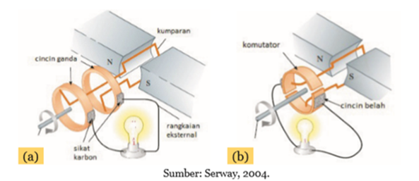
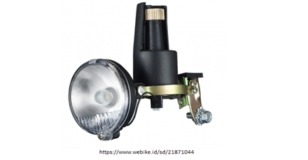
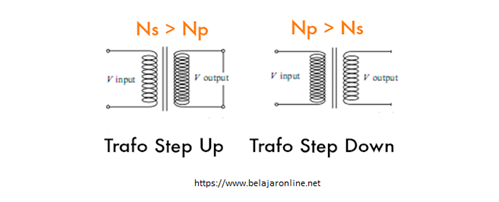

Induksi elektromagnetik adalah peristiwa timbulnya suatu tegangan listrik akibat medan magnet yang berubah-ubah yang diinduksikan terhadap penghantar. Banyak peralatan sehari-hari yang menerapkan prinsip induksi elektromagnetik seperti berikut.
a. Generator
 (a) Generator AC, (b) Generator DC
Generator adalah alat yang digunakan untuk merubah energi gerak (kinetik) menjadi energi listrik. Energi gerak yang dimiliki generator dapat diperoleh dari berbagai sumber energi alternatif, misalnya dari energi angin, energi air, dan sebagainya.
Generator AC (Alternating Current) dapat menghasilkan arus listrik bolak-balik dengan cara menggunakan cincin ganda, sedangkan generator generator DC (Direct Current) dapat menghasilkan arus listrik searah dengan cara menggunakan komutator (cincin belah).
b. Dinamo

Dinamo adalah generator yang relatif kecil seperti yang digunakan pada sepeda. Pada saat ban berputar sehinga mengakibatkan kepala dinamo berputar sehingga menghasilkan listrik yang membuat lampu pada sepeda dapat menyala. Semakin kencang putaran ban sepeda maka semakin kencang pula putaran kepala dinamo maka listrik yang dihasilkan semakin besar.
c. Transformator (trafo)

Tahukah kamu bahwa sebelum dialirkan ke rumah-rumah penduduk, tegangan listrik dari PLN harus diturunkan. Bagaimana cara menurunkan atau menaikkan tegangan listrik. Salah satu caranya adalah dengan menggunakan transformator. Berdasarkan penggunaannya, transformator dibagi menjadi dua jenis, yaitu transformator step-down dan transformator step-up. Transformator step-down berfungsi untuk menurunkan tegangan listrik, sedangkan transformator step-up berfungsi untuk menaikkan tegangan listrik.
Transformator adalah alat yang mampu mengubah nilai tegangan listrik dalam suatu rangkaian listrik. Alat ini bekerja menggunakan prinsip induksi magnetik. Induksi magnetik pada transformator berlangsung di kumparan-kumparan transformator. Dengan konsep induksi magnet ini, sebuah transformator mampu mengubah tegangan listrik bolak-balik menjadi lebih tinggi atau lebih rendah.
Mari Mencoba
Petunjuk :
Pilihlah 3 dari peralatan 5 peralatan yang menggunakan induksi elektromagnetik.
Tekan tombol cek untuk mengecek jawaban.
Berikut yang merupakan peralatan yang menggunakan induksi elektomagnetik adalah....
Penjelasan
Dinamo sepeda, generator, dan transformator merupakan beberapa peralatan yang menggunakan prinsip kerja induksi elektromagnetik.
Pelajari lebih banyak mengenai transformator pada halaman berikutnya